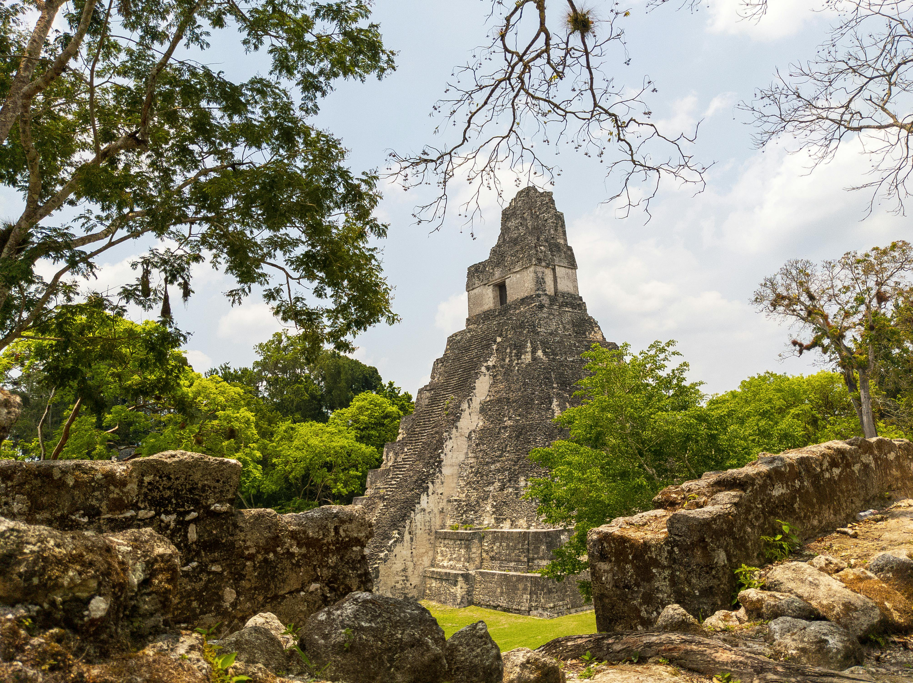
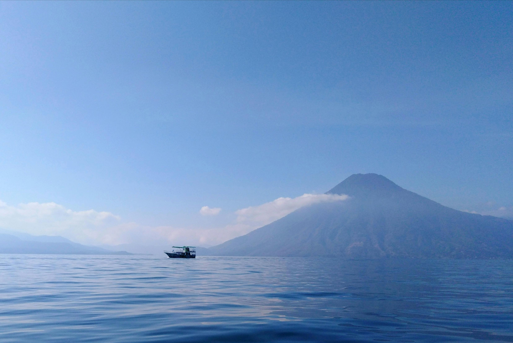
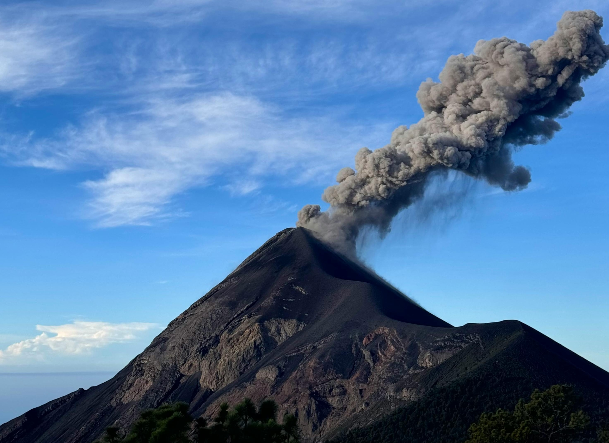

Destinos Destacados

Tikal
La antigua ciudad maya rodeada de selva tropical, hogar de impresionantes pirámides y templos.

Lago de Atitlán
Un lago rodeado de volcanes y pueblos mayas tradicionales, considerado uno de los más bellos del mundo.

Volcán Pacaya
Uno de los volcanes más activos y accesibles de Guatemala, con impresionantes ríos de lava.